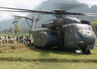
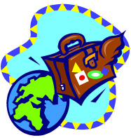
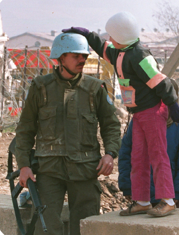
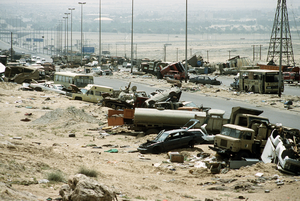
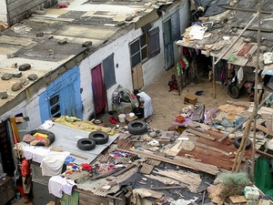
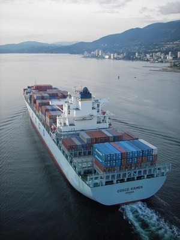

Lesson 1
Course overview
Internationalism and Global Responsibility
Examine motives, methods, foreign policy, international organizations, and global issues to judge when countries should cooperate beyond their borders.
I can...
- explain how these lessons connect to To what extent should internationalism be pursued?
- analyze sources for perspective, evidence, bias, and nationalist assumptions.
- collect evidence from lessons and resources to support a defensible position.
- refine my thinking into a clear Social Studies 20-1 position response.
Lesson pathway
Lesson pathway
Lesson Group Internationalism and Global Responsibility - Unit overview and internationalism
Lesson 1
Glossary of terms - Unit 3
Glossary of terms - Unit 3 In your assignments and discussions, you are expected to demonstrate understanding of the vocabulary in this unit. Glossary Following is a l...
Lesson 2 Unit 3: Should Internationalism Be Pursued?Unit 3: Should Internationalism Be Pursued? Unit Introduction As you have seen in the previous unit, for some nations, the economic, political, or security interests o...
Lesson 3 Unit 3: InternationalismUnit 3: Internationalism Should internationalism be pursued?
Lesson 4 What is Internationalism?What is Internationalism? Essential Questions: What is internationalism? How is internationalism different from globalization? How do national perspectives affect moti...
Lesson 5 What is Internationalism? - Internationalism Defined BWhat is Internationalism? Essential question: What is foreign policy? Internationalism affects how one nation acts towards other nations. The decision a nation or nati...
Lesson Group Internationalism and Global Responsibility - Section 1: Motives for international involvement
Lesson 6
Motives for International Involvement
Motives for International Involvement Introduction to Motives Essential Questions: What are some common motives of nations and states? How do national perspectives aff...
Lesson 7 Motives for International Involvement - Case Study: the Global Food CrisisMotives for International Involvement - Case Study: the Global Food Crisis Multimedia - The Global Food Crisis Watch two of the following videos: World Food in Crisis—...
Lesson 8 Four Motives for International InvolvementFour Motives for International Involvement Essential Questions: What motivates nations to pursue internationalism? How do national perspectives affect motives? It can...
Lesson 9 Motives for International Involvement - Motives and GoalsMotives for International Involvement In this lesson you will explore the various motives nation-states have regarding international involvement. Journal - Internation...
Lesson 10 Motives for International Involvement - HumanitarianMotives for International Involvement Humanitarianism The term humanitarianism means that an individual, organization or nation is motivated by the desire to assist ot...
Lesson 11 Motives for International Involvement - Economic StablityMotives for International Involvement Economic Stability Nation-states that are focused on the motive of economic stability want to encourage the growth and sustainabi...
Lesson 12 Motives for International Involvement - Self DeterminationMotives for International Involvement Self-determination There are some nations in Europe that worry about belonging to the EU. Great Britain, for example, is a member...
Lesson 13 Motives for international involvement - Peace SecurityMotives for international involvement Peace and Security Nation-states work together to promote international peace and security. Supranationalism: After World War One...
Lesson 29 International Humanitarian OrganizationsInternational Humanitarian Organizations Foreign Aid Foreign aid can include emergency relief (like helping victims of a natural disaster) or development aid (like don... International Humanitarian Organizations The United Nations goal: 0.7% of GDP for development assistance Did you know that Canada spent only 0.33% of our GDP o...
Lesson Group Internationalism and Global Responsibility - Section 2: Foreign policy choices
Lesson 14
Foreign Policy Introduction
Foreign Policy Introduction Key Questions: How do countries set foreign policy? How can states promote internationalism through foreign policy? Should foreign policy p...
Lesson 16 Foreign Policy MethodsForeign Policy Methods Which strategies and approaches work most effectively? The effectiveness of internationalism can be assessed in different ways. It may be determ...
Lesson 17 BilateralismBilateralism Bilateralism: two nations negotiate trade or defense agreements that help both nations Water is a very important resource. This resource is often shared b...
Lesson 18 MultilateralismMultilateralism Multilateralism: many nations working together to accomplish goals such as negotiating trade or defense agreements, work on assisting a humanitarian ef...
Lesson 19 SupranationalismSupranationalism Supranationalism: the idea of supporting an organization which brings several nations together with an independent governing body, to go above the aut...
Lesson 20 Canada’s foreign policy goalsCanada’s foreign policy goals Now that we have looked at methods of foreign relations, let’s look specifically at Canada’s foreign policy. Required Reading Please read...
Lesson 21 What influences our Foreign Policy Decisions?What influences our Foreign Policy Decisions? Canada’s foreign policy changes over time. There are many factors that influence the priorities of the government in rela...
Lesson 22 Canadian foreign policy IssuesCanadian foreign policy Issues Now that you have looked at the motives and methods of international relations in general, it is time for you to think about what Canada...
Lesson 23 Canadian Foreign Policy - WaterCanadian Foreign Policy - Water The high cost of food, as a result of the global food crisis, led Argentina to impose a tariff on the export of essential goods, such a...
Lesson Group Internationalism and Global Responsibility - Section 4: Global issues and international efforts
Lesson 15
Glossary
Glossary Following is a list of terms that you will encounter in the remainder of this unit. Click on each one for a definition: apartheid Arctic Council boycott circu...
Lesson 24 Foreign Aid - Millennium Development GoalsForeign Aid - Millennium Development Goals At the turn of the century, the United Nations took on the challenge of evaluating what were some of the most urgent global...
Lesson 33 International Efforts to Address Global IssuesInternational Efforts to Address Global Issues Key Questions: What are some contemporary global issues? How has internationalism been used to address contemporary glob...
Lesson 34 International Efforts to Address Global Issues - 6 CategoriesInternational Efforts to Address Global Issues - 6 Categories Global problems are organized here into six general categories: conflict, poverty, debt, enivornment, dis...
Lesson 35 Example of International Efforts to Address Global IssuesExample of International Efforts to Address Global Issues Before jumping into the assignment, let's get warmed up to the task by briefly exploring one issue - global w...
Lesson 36 International Efforts to Address Global Issues - Global Issues ReadingInternational Efforts to Address Global Issues Required Reading In preparation for the major assignment this week, please read all of Chapter 12 in the Exploring Natio...
Lesson 37 Unit 3 SummaryUnit 3 Summary Unit 3 Question: Should Internationalism Be Pursued? In this unit, you looked at the different perspectives of internationalism, and the ways in which n...
Lesson Group Internationalism and Global Responsibility - Section 3: International organizations
Lesson 25
International Organizations
International Organizations Key Questions: How have changing world conditions promoted the need for internationalism? How do the responses of various international org...
Lesson 26 International Organisations - The United NationsInternational Organisations - The United Nations Humanitarian Organisations Canada and the UN Humanitarian Organisations You might already be familiar with som...
Lesson 27 International Organizations - The United NationsInternational Organizations - The United Nations Events like the SARS outbreak illustrates why we need international organizations to deal with global issues. The best...
Lesson 28 International Organizations - Transnational OrganizationsInternational Organizations - Transnational Organizations Understand the Difference International organizations = organizations "between nations" Our focus, therefore,...
Lesson 30 International Economic OrganizationsInternational Economic Organizations In the previous lessons we looked mainly at humanitarian organizations created by the United Nations. In this lesson you will look...
Lesson 31 International Political OrganizationsInternational Political Organizations Political Organizations The European Union Created initially as an economic trading bloc in 1951, has now evolved into a major po...
Lesson 32 International Cultural OrganizationsInternational Cultural Organizations Cultural Organizations National groups, not necessarily nation-states, have also created international or transnational organizati...
Lesson 2
Unit 3: Should Internationalism Be Pursued?
Unit 3: Should Internationalism Be Pursued? Unit Introduction As you have seen in the previous unit, for some nations, the economic, political, or security interests o...Lesson 3
Unit 3: Internationalism
Unit 3: Internationalism Should internationalism be pursued?Lesson 4
What is Internationalism?
What is Internationalism? Essential Questions: What is internationalism? How is internationalism different from globalization? How do national perspectives affect moti...Lesson 5
What is Internationalism? - Internationalism Defined B
What is Internationalism? Essential question: What is foreign policy? Internationalism affects how one nation acts towards other nations. The decision a nation or nati...Lesson 6
Motives for International Involvement
Motives for International Involvement Introduction to Motives Essential Questions: What are some common motives of nations and states? How do national perspectives aff...Lesson 7
Motives for International Involvement - Case Study: the Global Food Crisis
Motives for International Involvement - Case Study: the Global Food Crisis Multimedia - The Global Food Crisis Watch two of the following videos: World Food in Crisis—...Lesson 8
Four Motives for International Involvement
Four Motives for International Involvement Essential Questions: What motivates nations to pursue internationalism? How do national perspectives affect motives? It can...Lesson 9
Motives for International Involvement - Motives and Goals
Motives for International Involvement In this lesson you will explore the various motives nation-states have regarding international involvement. Journal - Internation...Lesson 10
Motives for International Involvement - Humanitarian
Motives for International Involvement Humanitarianism The term humanitarianism means that an individual, organization or nation is motivated by the desire to assist ot...Motives for International Involvement
Humanitarianism
The term humanitarianism means that an individual, organization or nation is motivated by the desire to assist other people to improve their quality of life. Most people agree that helping others is the right thing to do; it is moral (neighbors helping neighbors).
| The outpouring of international aid that was sent to the areas devastated by the 2004 tsunami is a good example of this; NGOs like the Red Cross were overwhelmed by the generosity of people from around the world. |  |
|
Above: The 2004 Boxing Day tsunami (a giant wave) was triggered by an undersea earthquake - the biggest earthquake ever recorded! Source: NOAA |
 |
Above: A US Navy helicopter delivering humanitarian aid in Indonesia after the 2004 tsunami. What motivated the USA to do this? Source: Travis M Burns, USN |
Governments provided aid through international organizations like the UN.
NGOs, like the Red Cross, are non-government organizations. Another NGO, Amnesty International, works in countries around the world to ensure that people have the basic rights recognized in the United Nations Universal Declaration of Human Rights. Amnesty International is not motivated by money or political control; they are motivated by humanitarian beliefs. However, our focus is on internationalism - "between nations" - so how national governments work together through international government organizations or individually (unilateral or bilateral).
Canada believes that humanitarianism is a major part of our national identity, and this can be seen in our participation in peacekeeping, peacemaking and peace enforcement efforts, and in helping less developed nations build their economies, providing aid in times of natural disaster, and by accepting refugees from around the world.
Lesson 11
Motives for International Involvement - Economic Stablity
Motives for International Involvement Economic Stability Nation-states that are focused on the motive of economic stability want to encourage the growth and sustainabi...Lesson 12
Motives for International Involvement - Self Determination
Motives for International Involvement Self-determination There are some nations in Europe that worry about belonging to the EU. Great Britain, for example, is a member...Lesson 13
Motives for international involvement - Peace Security
Motives for international involvement Peace and Security Nation-states work together to promote international peace and security. Supranationalism: After World War One...Lesson 14
Foreign Policy Introduction
Foreign Policy Introduction Key Questions: How do countries set foreign policy? How can states promote internationalism through foreign policy? Should foreign policy p...Key Questions:
-
How do countries set foreign policy?
-
How can states promote internationalism through foreign policy?
-
Should foreign policy promote internationalism?
Promotion of Foreign Policy
Foreign Policy refers to the way in which a nation handles its relations with other countries.
Why would you care about Canada’s foreign policy? Imagine you have created a new video game and you want to sell on the global market.  You will want to make sure that the Canadian government has established a good trading relationship with other countries so that you can set up trade deals with companies in those regions, and you’ll want to be sure those countries participate in international copyright legislation so that your software can be protected from pirating (you won't get paid for all your hard work if it is pirated). It also helps if there is economic prosperity in the countries you sell to so people there can afford to purchase luxuries like your game.
You will want to make sure that the Canadian government has established a good trading relationship with other countries so that you can set up trade deals with companies in those regions, and you’ll want to be sure those countries participate in international copyright legislation so that your software can be protected from pirating (you won't get paid for all your hard work if it is pirated). It also helps if there is economic prosperity in the countries you sell to so people there can afford to purchase luxuries like your game.

Or maybe you dream of one day travelling the world on your vacations or as part of your work. Canadian foreign policy may have directly impacted the countries you want to travel to. How will the locals receive you? Will they welcome Canadians? Will you need additional security or will you be able to walk around freely?The foreign policy of a nation depends on a nation’s goals. Most nations want peace and security within their nation, growth and prosperity for their people, sovereignty to control their own affairs, and world recognition as well as respect. In an era of globalization, these goals can only be achieved if your nation has a clear idea of what its foreign policy goals are, because the actions of nations around it can affect your nation’s own ability to succeed.
Lesson 15
Glossary
Glossary Following is a list of terms that you will encounter in the remainder of this unit. Click on each one for a definition: apartheid Arctic Council boycott circu...Lesson 16
Foreign Policy Methods
Foreign Policy Methods Which strategies and approaches work most effectively? The effectiveness of internationalism can be assessed in different ways. It may be determ...Lesson 17
Bilateralism
Bilateralism Bilateralism: two nations negotiate trade or defense agreements that help both nations Water is a very important resource. This resource is often shared b...Lesson 18
Multilateralism
Multilateralism Multilateralism: many nations working together to accomplish goals such as negotiating trade or defense agreements, work on assisting a humanitarian ef...Lesson 19
Supranationalism
Supranationalism Supranationalism: the idea of supporting an organization which brings several nations together with an independent governing body, to go above the aut...Lesson 20
Canada’s foreign policy goals
Canada’s foreign policy goals Now that we have looked at methods of foreign relations, let’s look specifically at Canada’s foreign policy. Required Reading Please read...Lesson 21
What influences our Foreign Policy Decisions?
What influences our Foreign Policy Decisions? Canada’s foreign policy changes over time. There are many factors that influence the priorities of the government in rela...Lesson 22
Canadian foreign policy Issues
Canadian foreign policy Issues Now that you have looked at the motives and methods of international relations in general, it is time for you to think about what Canada...Now that you have looked at the motives and methods of international relations in general, it is time for you to think about what Canada’s foreign policy should be on a specific issues. As you have learned, you can influence the Canadian government when it comes to foreign policy. Canadians live in a democracy which means they have some control of the government through elections and freedom of speech. This also means citizens share the responsiblity for the consequences of the government's actions on the world stage. If you don't like what Canada is doing, it is up to you to change it!
Required Reading
Please read about the following foreign policy topics in the Exploring Nationalism textbook.
Water: Chapter 12: pages 272 - 273; and 276 - 277.
Peacekeeping: Chapter 6: pages 154 - 155; Chapter 7: page 173; and Chapter 10: pages 236 - 238 and 246 - 247; and
Foreign Aid: Chapter 10: pages 243 - 244.
Peacekeeping or Peace-enforcement? Peace Making or Peacebuilding?
 |
Canada's peacekeeping monument in Ottawa |
Justin Trudeau on Peacekeeping and "Other" Peace Operations
Canada was a major contributor to UN peacekeeping operations from the Suez Crisis in 1956 until the early 1990s. Liberal and then Conservative governments shifted the focus to peace enforcement operations, often through NATO (the military alliance between US/Canada and much of Europe).
By 2013, Canada contributed less to peacekeeping than Mongolia! (Delvoie, "The death of peacekeeping", The Whig, 21/7/2013). For the past 20 years or so, Canada has not been a major contributor to UN peacekeeping operations. Is Canada still deserving of its reputation as a peacekeeping nation?
Justin Trudeau's Liberal government plans to return Canada to UN peacekeeping. What does this mean? To which UN peacekeeping missions has he committed Canada to date? Is the mission in Iraq "peacekeeping"?
Trudeau's plan, however, is not exclusively peacekeeping, as you will see in the video below. What are those other peace operations he is talking about? Can Canada be a credible peacekeeper if it is also an enforcer? Note where Trudeau says (around 26 seconds in) "peacekeeping operations" but then corrects himself to say "peace operations". He knows "peacepeeking" has a specific meaning. In this lesson, you will explore the difference between peacekeeping, peace enforcement, peacemaking and peace building operations.
Do you think Canada should return to peacekeeping? Let's find out what that means and the risks and benefits involved.
Understand the Difference
Review the definitions by clicking on the words: peacekeeping, peace-enforcement and peacemaking.
These terms mean different things - yet even experts get them confused* (see below).
One way to help remember the difference is to reverse the combined words:
Peacekeeping becomes "keeping the peace". This implies that there is a peace to keep - there has to be a peace agreement or ceasefire in place and the previously warring sides invite peacekeepers to monitor the peace or ceasefire they agreed to - for as long as it takes until a permanent reconciliation is reached. Peacekeepers are lightly armed neutral observers and only allowed to use armed force to defend themselves. All these criteria need to be fullfilled for it to be a true peacekeeping mission. To avoid mistakes by the warring sides, and to reassure civilians who may not trust one or both of the warring sides, UN peacekeepers wear distinctive blue helmets to let everyone know they are neutral.
Peace-enforcement becomes "enforcing peace", or just "forcing peace". A third party (individual country, alliance or temporary coalition) can enter a conflict to impose peace between two warring sides. Military force can be used to remove an army that has invaded a neighbouring country. Peace-enforcement can also be used for humanitarian reasons, such as to stop or prevent acts of genocide or crimes against humanity by one or both sides in a conflict. Peace-enforcement does NOT require an invitation by the warring sides. It typically comes from the third party alliance or an international organization. If peace-enforcement is authorized by the UN, it falls under "Chapter VII" of the UN Charter: Specifically Articles 42 and 51 - the authorization to use military force to enforce the UN's decisions. For example, a Security Council resolution's mandate may stipulate that third party peace enforcers may use armed force to protect civilians, infrastructure, themselves or even go on the offensive against combatants in the conflict (the Korean War was a Chapter VII mission). Note the differences between this and peacekeeping.
Peacemaking* becomes "making peace". This implies that there is no peace, or a violent conflict is looming. When two friends are arguing and about to start swinging fists, you may not be able to use force to stop them, even if just to avoid injury to yourself. But you might be able to use rational (or emotional) appeals to persuade your fighting friends to "make peace". Diplomacy is the tool used at the international level to "make peace" between warring sides or before a serious conflict erupts into violence.
Peacebuilding, becomes "building peace". This can occur to prevent violence from occurring in the first place, or after a conflict has ended to avoid a resumption of hostilities. This involves international assistance to build the infrastructure required for lasting peace, including economic and development assistance, training police and security forces and developing institutions to promote civil society. While it is typically done before or after a conflict, peacebuilding has also been attempted during violent conflicts (eg. Afghanistan and Iraq: 2001-today).
The two different military approaches - peacekeeping and peace-enforcement - can be combined with diplomatic peacemaking and civil society peacebuilding.
*Please note: Your textbook and Alberta Education use the term "peacemaking" when describing peace-enforcement. These two terms have their own definitions in international organizations, such as the UN (search the UN website) and in scholarly research. Therefore, the correct international definitions above are used in this course to prepare you for university and/or careers in the international field. However, if you encounter or need to use these terms in an Ablerta Diploma exam, explain what you mean when you use either of these terms because the Provincial Examiner marking your Diploma Exam may be informed by the Alberta Education Programme of Studies rather than the widely accepted international and specialist norms.
Multimedia - Peacemaking and Peacebuilding
Watch this 1-minute public service announcement, Peace is Hard, narrated by UN celebrity spokesperson George Clooney.
If the video does not play in D2L, go directly to the Peace is Hard video on YouTube.
Peacemaking and Peacebuilding
How often does the international community find itself intervening militarily after a conflict has escalated to violence? Sometimes they send peacekeepers once the fighting has died down or peace-enforcement during a conflict or picking sides and becoming involved in full scale wars. These military interventions are expensive. According to the Parliamentary Budget Officer, Canada's Afghanistan mission may have cost as much as 18 billion dollars!
As Clooney said, peace may be hard but proactive conflict prevention may be a more cost effective investment than reactive military intervention. According to a British government commissioned study, Spending to Save (Chalmers, 2004), investment in conflict prevention saves money in the long run. Read the following excerpt from the Executive Summary (click the hyperlink for the full article):
Executive Summary
It is often argued that it is more cost effective to tackle conflicts before they reach the point of mass violence. But further evidence is needed in order to make an assessment of this claim. This study, commissioned by DFID, seeks to make a contribution to this process. It concludes that:
- Conflict prevention is (or would have been) a cost effective investment for the international
community in all the case studies chosen, even allowing for large margins of error in the
estimation of costs and benefits;- A spend of £1 on conflict prevention will, on average, generate savings of £4.1 to the
international community (with a range of 1.2 to 7.1);- Some of the most cost-effective packages take place in the gestation phase of conflict. But
estimates of impact depend critically on the willingness of local political authorities to allow
implementation;- The cost-effectiveness of preventive military action is greater when the potential for
resistance is small and the scale of deployments is limited;- The balance of CP components, the timing of their use, and the availability of entry points
are all critical to cost-effective intervention.Chalmers, Malcom. "Spending to Save? An Analysis of the Cost Effectiveness of Conflict Prevention" (Centre for International Cooperation and Security: 12 June 2004) Retrieved 19 March 2015 from http://www.csae.ox.ac.uk/conferences/2004-BB/papers/Chalmers-CSAE-BB2004.pdf
* £ = Pound Sterling: The British currency.
Journal
Do you think the Canadian government is spending your (soon to be) tax dollars in the most effective way when it comes to peace and security? What does Canada spend on conflict prevention? Are we involved in this kind of work? In what ways? Find examples.
In cases when the international community has not been proactive in peacemaking and peacebuilding, conflicts can sometimes escalate to violence. International organizations sometimes become involved in peacekeeping or peace-enforcement.
UN Peacekeeping

The troops of member nations serving as United Nations peacekeepers go into areas of conflict wearing their distinctive blue helmets - a symbol to identify them as neutral peacekeepers. Although they are sent in as soldiers to keep the peace, they are often given peacebuilding tasks in order to help the country they have been invited into, like monitoring elections, assisting the local police, training the army and rebuilding local communities. Canadian police officers often serve alongside soldiers as part of UN peacekeeping missions. This could be considered a combination of peacekeeping and peacebuilding in their mission mandate.
Problems with UN peacekeepers
Some people question whether or not peacekeepers are in fact neutral. If Canada is allowed to decide when and where to send our peacekeeping troops, are we promoting our own ideology by getting involved only in missions we agree with? Are we expecting nations to accept our values, even if those values conflict with the values of that country’s people? For example, if Canada sends in troops and then starts pressuring the government to give more rights to the women in the region, this could be seen as Canada trying to promote an ideology which we think is right in a region that may not support this ideology. The same could be said about economic ideology. Do we choose to participate in the missions that will benefit us economically in the long run? And ignore those that will have no economic impact on Canada?
A bigger issue is the reputation of the United Nations. In the 1990s, the United Nations sent peacekeeping missions to Somalia and Bosnia. Both of these missions failed to keep civilians safe. In 1994 a genocide occurred in Rwanda while UN peacekeepers looked on. Why? Because when peacekeepers are sent in, they are not there to get involved in the fighting, they cannot fire their weapons unless they are directly threatened. Romeo Dallaire, the Canadian commander of UN peacekeeping forces in Rwanda, wanted to intervene to stop the genocide but the UN Security Council would not authorize him to do so. Many would see this as a failure of UN peacekeeping. Yet UN forces can only do what the Security Council authorizes. Why do you think members of the Security Council were reluctant to transition from peacekeeping to peace-enforcement?
At the end of the 20th century, rebels increasingly ignored the neutral reputation of the UN blue helmets and would attack civilians in front of peacekeepers, knowing that the peacekeepers had a limited ability to stop what was happening. And parties to the conflict were not recongizing UN peacekeepers as neutral. In Bosnia, Somalia and Rwanda, UN Peacekeepers themselves came under attack by parties to those conflicts. It is not that peacekeepers are inneffective; they have been successful in keeping hostile sides apart until tempers cool. They are particularly effective when both sides want peace. Less effective when one or both sides are not committed to the peace process. The problem is that peacekeepers are not authorized to intervene with the use of force. That compromises their neutrality. To intervene with force, you need something other than neutral peacekeepers. That is when peace-enforcement comes into play.
Peace-enforcement
One solution proposed to solve these problems is to have the United Nations create it’s own army. Each member nation would be required to have a certain number of troops dedicated to this army. That way the United Nations would always know how many troops they have available to them, and will be able to control the actions of these troops. The United Nations would multilaterally decide when and where to get involved. So if 1,000 Canadian troops were assigned to the UN army, they would have to deploy where the UN decides rather than Canada picking and choosing which missions to participate in. A permanent UN standby force was envisioned in the UN Charter in 1946 but resistance to the idea by UN Security Council members, especially the Soviet Union, and Cold War (1947 - 1991) politics meant it was never implemented. The Cold War and the Soviet Union are long gone. Should the UN reconsider this idea?
Another solution is to create an atmosphere where UN members or other international organizations are more willing to particiapte in peace-enforcement. The usual rules of engagement do not allow UN peacekeepers to use force except in their own self-defence. By authorizing peace-enforcement, more heavily armed soldiers could intervene to bring a swift end to the conflict or crimes against humanity. And since it would be a multilateral effort, the offending nation would know that this effort had wide support among the international community, lending the action legitimacy.
| The United Nations has authorized peace-enforcement in the past. In 1990 Iraq invaded Kuwait, allegedly because of a dispute over a shared oil field. The decision by the United Nations to authorize a multi-nation force to intervene was relatively easy to make, as one nation had invaded another (a clear violation of the UN Charter). The 1991 U.S. led counter-invasion successfully removed Iraqi forces from Kuwait in one of the swiftest wars in history. But it can be much more difficult to decide whether to send in troops when the events are occurring within a single sovereign nation. |  The aftermath of the Iraqi retreat from Kuwait on the "highway of death" where coalition air forces attacked the retreating Iraqi army. Photo credit: Tech. Sgt. Joe Coleman |
Problems with Peace-enforcement
Peace-enforcement is typically not a neutral force. They usually take sides, such as in the case of the Iraqi invasion of Kuwait above. Furthermore, peace-enforcement typically requires more resources than peacekeeping because it is about war-fighting and not just observation of a ceasefire. The UN does not have a standing army so peace-enforcement operations may be delegated to multilateral organizations, like NATO. However, NATO is an exclusive military alliance primarily concerned with the interests of its member nations (Europeans and North-Americans). It is therefore not neutral. Non-members have no say in NATO decision making. Another problem with peace-enforcement is that it can violate national sovereignty - a sovereign state controls the use of force on its own territory, not foreign armed forces. Another downside to peace-enforcement is that it does not address the underlying problems that created the conflict in the first place. The Korean War of the 1950s was a UN operation, authorized under Chapter VII of the UN Charter. While they succeeded in restoring the pre-existing border between N. and S. Korea, the N. Korean dictatorship remains a threat to international security.
The United Nations has declared that it must get involved to protect the people living in a state that is no longer protecting the welfare of their citizens, or actively harming them. It is legally authorized to intervene, or authorize multilateral organizations to intervene, in cases of genocide or crimes against humanity. This interventionist approach was designed to prevent a recurrence of events like the genocide of World War Two. The methods of intervention can range from humanitarian support for the victims, to diplomatic efforts, or even the use of force (peace-enforcement). Any of these efforts can be seen to violate the sovereignty of the nation involved. Therefore, unlike peace enforcement, peacekeepers are invited by the parties to a conflict and therefore do not violate national sovereignty.
Multimedia Enrichment - Rent/buy/download a movie!
Go to http://www.imdb.com or another movie review site and search for the full theatrical trailers for movies that relate to peacekeeping or peace enforcement. For example,
- Blackhawk Down - An elite American assault force attempting to capture a Somali warlord became pinned down until their eventual rescue by Malaysian and Pakistani forces (part of a UN peace-enforcement mission).
- Hotel Rwanda - A Rwandan hotel manager provided refuge to people fleeing the genocide when UN member nations refused to send additional peacekeepers or to transform the mission to peace-enforcement.
- Shake Hands with the Devil - Based on the book of the same name about Canadian Romeo Dallaire's exerience in Rwanda. He was the commanding officer of the UN peacekeeping mission. Calgary connection: Dallaire was awarded the Calgary Peace Prize in 2015!
Remember these are movies! While they are based on actual events they are not 100% factual.
Internet Enrichment - UN Missions, Past and Present
- This United Nations Peacekeeping website lists Current Operations and Past Operations (see the menubar on the left).
Based on the definitions provided in this lesson, does the current international military deployment to Iraq and Syria against ISIS qualify as either peacekeeping or peace enforcement? If not, what is it? Is peace-enforcement different from war?
Lesson 23
Canadian Foreign Policy - Water
Canadian Foreign Policy - Water The high cost of food, as a result of the global food crisis, led Argentina to impose a tariff on the export of essential goods, such a...Lesson 24
Foreign Aid - Millennium Development Goals
Foreign Aid - Millennium Development Goals At the turn of the century, the United Nations took on the challenge of evaluating what were some of the most urgent global...Lesson 25
International Organizations
International Organizations Key Questions: How have changing world conditions promoted the need for internationalism? How do the responses of various international org...Lesson 26
International Organisations - The United Nations
International Organisations - The United Nations Humanitarian Organisations Canada and the UN Humanitarian Organisations You might already be familiar with som...Lesson 27
International Organizations - The United Nations
International Organizations - The United Nations Events like the SARS outbreak illustrates why we need international organizations to deal with global issues. The best...Lesson 28
International Organizations - Transnational Organizations
International Organizations - Transnational Organizations Understand the Difference International organizations = organizations "between nations" Our focus, therefore,...Lesson 29
International Humanitarian Organizations
International Humanitarian Organizations Foreign Aid Foreign aid can include emergency relief (like helping victims of a natural disaster) or development aid (like don... International Humanitarian Organizations The United Nations goal: 0.7% of GDP for development assistance Did you know that Canada spent only 0.33% of our GDP o...Lesson 30
International Economic Organizations
International Economic Organizations In the previous lessons we looked mainly at humanitarian organizations created by the United Nations. In this lesson you will look...Lesson 31
International Political Organizations
International Political Organizations Political Organizations The European Union Created initially as an economic trading bloc in 1951, has now evolved into a major po...Political Organizations
- Created initially as an economic trading bloc in 1951, has now evolved into a major political organization
- Main objectives:
- promote social and economic progress (e.g. the single currency was launched in 1999 - Euro)
- strengthen European identity by creating a European citizenship that doesn’t replace national citizenship (e.g. a European passport to make it easier to travel)
- build on established EU law
- Institutions include the European Parliament, Investment Bank and Court
- One major advantage of the EU is its ability to encourage economic and political stability in member nations, which reduces conflicts (potential wars)
- Officially established in 1996 to promote environmental, social and economic sustainable development in the Arctic region.
- Includes representatives from indigenous nations of the regions, as well as representatives from the nation-states of Canada, United States, Denmark, Finland, Iceland, Norway, Sweden, Russia.
- Established in 2002, almost all African nation-states belong
- Main objectives:
- Overcome negative affects of colonialism and apartheid
- Promote unity among AU members, while protecting territorial sovereignty
- Coordinate and promote economic development
- Promote international cooperation
- Organizations include a parliament, court and economic council
- Made up of the eight major developed nations
- USA, Britain, France, Germany, Italy, Japan, Canada (previously G8 - Russia was suspended after the annexation of Crimea in 2019).
- Not a formal organization, instead they meet on a regular basis to discuss policy to help coordinate the foreign policies of member nations
- In 2019 they dealt with issues as diverse as what to do about the failure of the Kyoto environmental protocol, and the fraudulent elections in Zimbabwe
Military Organizations
NATO - North Atlantic Treaty Organization
- A regional defense alliance whose purpose is to enhance the stability, well-being, and freedom of it’s members through collective defence.
- Initially created to help protect the weakened from World War II Western European democracies from the communist Soviet Union.
- USA and Canada pledged to support the war-torn nations militarily, against the perceived threat of communist expansion.
- With the collapse of communism in the early 1990s, some questioned the need for NATO, but it has now taken on a peace-enforcement role beyond its original European and the North Atlantic area of responsibility.
NORAD - North American Aerospace Defense Command
- During the Cold War the threat of nuclear bombers and missiles heading from the Soviet Union over the Arctic Circle to Canada and the United States was real.
- U.S. and Canada created a bilateral organization to coordinate radar stations and military action in case of attack, specifically an air attack.
- Like NATO, the role of NORAD has changed with the collapse of communism, but the alliance still plays an important role. For example, on 9/11, NORAD allowed the governments of Canada and the United States to work together to deal with all of the air traffic already in the air when the attacks happened, and to be prepared for a counter-attack if necessary.
Both NATO and NORAD are examples of collective defence: members joining together (collective) in order to defend each other from threats outside the alliance.
Lesson 32
International Cultural Organizations
International Cultural Organizations Cultural Organizations National groups, not necessarily nation-states, have also created international or transnational organizati...Lesson 33
International Efforts to Address Global Issues
International Efforts to Address Global Issues Key Questions: What are some contemporary global issues? How has internationalism been used to address contemporary glob...Lesson 34
International Efforts to Address Global Issues - 6 Categories
International Efforts to Address Global Issues - 6 Categories Global problems are organized here into six general categories: conflict, poverty, debt, enivornment, dis...Lesson 35
Example of International Efforts to Address Global Issues
Example of International Efforts to Address Global Issues Before jumping into the assignment, let's get warmed up to the task by briefly exploring one issue - global w...Lesson 36
International Efforts to Address Global Issues - Global Issues Reading
International Efforts to Address Global Issues Required Reading In preparation for the major assignment this week, please read all of Chapter 12 in the Exploring Natio...Lesson 37
Unit 3 Summary
Unit 3 Summary Unit 3 Question: Should Internationalism Be Pursued? In this unit, you looked at the different perspectives of internationalism, and the ways in which n...Unit 3 Question: Should Internationalism Be Pursued?
In this unit, you looked at the different perspectives of internationalism, and the ways in which nations can interact with each other. That interaction can affect many things, including worldwide economic stability and international peace. Many feel that in today’s globalized society, internationalism is required to solve global problems.
With that focus on internationalism, there can be a loss of sovereignty. Nations must decide how they want to balance internationalism with their national identity. Does a nation want to have the reputation of being internationalist, like Canada is with the promotion of multiculturalism? Or is it better to encourage a more isolationist approach in order to strengthen the patriotism of your people, which is seen in North Korea, or unilateralist, like the US was under George W. Bush
The following key ideas should shape your response to the unit question:
- The resolution of global issues may demand the participation of nations because of the impact these issues have on the nation itself.
- International cooperation, involvement, or intervention may be necessary to maintain the economic, political, or security interests of the nation.
- Nations such as Canada, the United States, and China and members of the European Union may hold the perspective that national citizens should come to the aid of global citizens. A variety of motives may lead a nation to include global interests as national interests.
- It may be in the national interests of Canada to support global interests in the world economy, global security, and human rights’ issues in order to guarantee peace and stability in Canada.
- The reaction of nations towards global issues may range from isolationism to active participation.
- Depending on the extent of the issue, nations may or may not pursue internationalism to resolve the challenges created by the issue. It may be perceived as a local or a global issue. Internationalism may be applied if citizens and nations believe the issue has the risk of becoming a global issue and will impact citizens beyond the borders.
- A sense of collective responsibility for the sustainability of this planet and the prosperity of all citizens may also lead a nation to come to the aid of another nation.
- In a variety of situations, internationalism is viewed as the most effective tool. Immediately affected nations may not have the tools to respond quickly or effectively. Cooperation and involvement by other nations may require the sacrifice of nationalism in the pursuit of internationalism.
- The cost of pursuing internationalism may make nations reluctant to sacrifice nationalism (for example, when national interests are ignored in favour of international interests or the national interests of another nation).
Nationalist or Internationalist? Where do you stand now?
Multimedia - Dilemmas of Pursuing Internationalism
Use this interactive Flash activity to build your personal nationalist-internationalist profile.
Journal
Interpret each of the following sources and write a response related to these sources and both the questions below. Now that you have completed the Unit, you should be able to complete this exercise in about 40-60 minutes.
Source 1A United Nations Peacekeeper
photo credit: AIDG. (Uploaded February 15, 2019) “MINUSTAH Armored Personnel Carrier with Mounted M16”. Found through http://search.creativecommons.org/ (visited July, 2019) |
Source 2Poverty in Ghana, Africa  photo credit: spinning jenny. (Uploaded March 4, 2005) “Poverty”. Found through http://search.creativecommons.org/ (visited July, 2019) |
Source 3A cargo ship heading out of Vancouver  photo credit: SqueakyMarmot (Uploaded December 17, 2006) “Costco Xiamen”. Found through http://search.creativecommons.org/ (visited July, 2019) |

{kind=link}
The promotion of internationalism can lead to conflict with nationalist priorities. Write an essay in which you answer both questions below:
How does each of the photographs correspond to an event that may require international involvement?
AND
Should nationalism be sacrificed in the interests of internationalism?
Write a response in which you
- Interpret EACH source to identify the possible application of internationalism.
- Explain the ways internationalism may require the surrender of nationalist goals.
- Evaluate if nationalism should be sacrificed for internationalist goals
- Support your response by referring to the sources and/or your understanding of Social Studies.
Reminders for Writing Assignments and long-answer Diploma-type exam questions:
- Remember to answer everything in the descriptor
- Plan your response
- Organize your response to effectively address the questions
- Refer to the sources as you write your response
- Correct errors that you find in your writing
Issue investigation
Issue Inquiry
To what extent should internationalism be pursued?
Diploma issue inquiry
Start with a position
Use this page to record your first thinking before you gather evidence across the unit lessons.Source response practice
Source Analysis
Use this routine for cartoons, images, charts, excerpts, quotations, and case studies from the Social 20-1 lessons.
Diploma source response
Source Response Routine
To what extent should internationalism be pursued?
Position paper planning
Position Builder
Move from evidence to a defensible position. Keep the claim specific, arguable, and connected to the issue.
Diploma position paper
Build a Position Paper Path
To what extent should internationalism be pursued?Evidence bank
Evidence Bank
Save reusable proof notes from lessons, source analysis, and your own examples.
Course library
Library
Open local documents while building evidence for To what extent should internationalism be pursued?
Film room
Film Room
Review media from the issue lessons in one curated playlist. Use the prompts to connect what you watch or hear back to the related issue question.
Study guide
Study Guide
Review the issue through active recall before shaping a final position.
Course resources
Resources
Textbook chapters, course files, and source links connected to Internationalism and Global Responsibility.